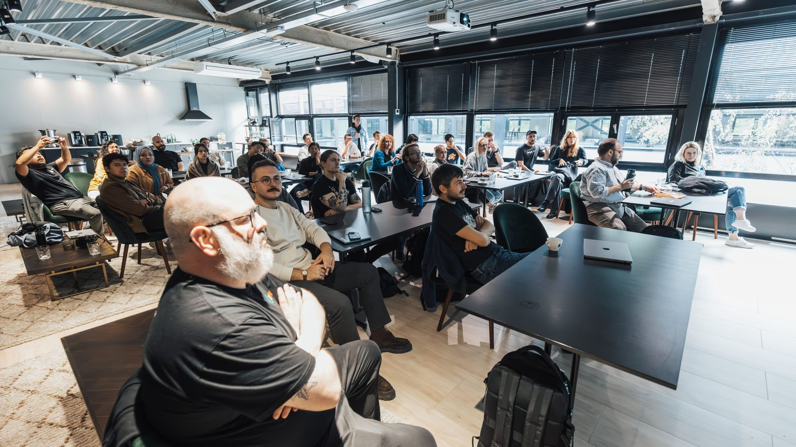

Itapema · Cultura
Itapema · CulturaBanda Municipal de Itapema é campeã em concurso no Paraná no ano em que completa 20 anos
A cultura da cidade que já existe e já dá resultado.
O programa LIDERE é do consórcio CIM-AMFRI com o Sebrae/SC. São quatro dias de encontro presencial em setembro, de graça, e a vaga é para quem trabalha com cultura e economia criativa.
Em 30 segundos · Modo de Leitura, formato original Santa Informa
O LIDERE é uma formação em liderança do consórcio CIM-AMFRI em parceria com o Sebrae/SC, voltada a quem trabalha com cultura, economia criativa e economia da cultura.
A inscrição vai até 21 de agosto, quer dizer, fecha nesta sexta-feira. É pelo Mapa Cultural do CIM-AMFRI, e não custa nada.
São até 15 participantes. Podem se inscrever pessoa física, MEI e pessoa jurídica que atuem no setor.
Os encontros são presenciais, de 15 a 18 de setembro, das 8h30 às 12h30 e das 13h30 às 17h30. Itapema é um dos municípios atendidos pelo consórcio.
EconomiaPublicada em Redação Santa Informa

Quem toca projeto cultural na região sabe como é: a ideia existe, o público existe, mas na hora de montar equipe, fechar contrato e segurar um cronograma a coisa desanda. É esse buraco que o LIDERE diz querer tapar. O programa é do Consórcio Intermunicipal Multifinalitário da AMFRI, o CIM-AMFRI, em parceria com o Sebrae/SC, e trabalha habilidades práticas de liderança para profissionais da cultura, da economia criativa e da economia da cultura.
A vaga é para pessoa física, microempreendedor individual e pessoa jurídica que trabalhem nesses setores. Não é curso aberto a qualquer interessado, é formação fechada em grupo de até 15 participantes. E é gratuito.
A inscrição é feita no Mapa Cultural do CIM-AMFRI, a mesma plataforma que o consórcio usa para os editais de cultura da região. O prazo termina em 21 de agosto.
Os encontros são presenciais, de 15 a 18 de setembro. O horário divulgado é das 8h30 às 12h30 e das 13h30 às 17h30, o que dá oito horas por dia em quatro dias seguidos. Não é curso de assistir no fim da noite, é semana reservada.
O consórcio atende Balneário Camboriú, Balneário Piçarras, Bombinhas, Camboriú, Ilhota, Itajaí, Itapema, Navegantes, Penha e Porto Belo. Ou seja, o produtor de Itapema disputa a vaga com o de Bombinhas e o de Itajaí, e todos entram pela mesma porta.
Vale reparar que o CIM-AMFRI virou o endereço padrão da cultura por aqui. É pelo Mapa Cultural do consórcio que Itapema também está recebendo, neste momento, inscrição para os editais municipais de fomento. Quem já tem cadastro na plataforma para um, usa o mesmo para o outro.
Cultura no litoral catarinense vive de temporada. O verão paga o ano, e quem produz precisa chegar em dezembro com projeto pronto, equipe montada e contrato assinado. Setembro é o mês em que isso ainda dá para arrumar. Uma formação de liderança em setembro, de graça, para quem toca produção cultural, cai num momento em que a agenda ainda está aberta.
O resumo de 30 segundos está no topo e a versão completa é o texto acima. Aqui ficam as três leituras da casa sobre o mesmo assunto.
Clara, a otimista
Quinze vagas parece pouco, e é justamente aí que está a graça. Turma pequena é turma em que todo mundo fala, todo mundo é ouvido e o instrutor consegue olhar projeto por projeto. Formação de auditório cheio a gente já viu bastante.
E o momento é bom. Setembro é quando o produtor da região ainda consegue mexer no plano do verão. Sair de uma semana dessas com a equipe pensada e o cronograma no papel muda a temporada inteira.
Seu Prudêncio, o criterioso
Merece atenção o prazo. O aviso saiu em 18 de agosto e a inscrição fecha em 21. São três dias para quem trabalha com cultura na região descobrir que a oportunidade existe, entender o que é e se cadastrar numa plataforma que talvez ainda não use. Uma sugestão útil: o consórcio anunciar essas chamadas com pelo menos duas semanas de antecedência, e avisar as secretarias de cultura dos dez municípios para repassarem.
Vale acompanhar também a exigência de presença. Quatro dias seguidos, manhã e tarde, é uma semana inteira fora do trabalho. Para o MEI que produz sozinho, isso significa não faturar naqueles dias. E, como o local não foi divulgado, quem mora em Bombinhas ou Porto Belo ainda não sabe se vai ter deslocamento diário pela frente.
Feita a ressalva, a iniciativa é acertada. Formação de gestão para o setor cultural é exatamente o que costuma faltar, e o Sebrae tem prática nisso. Fazer pelo consórcio, atendendo os dez municípios de uma vez, é usar bem uma estrutura que já existe e sai mais barato para todo mundo.
Caco, o sarcástico
Quinze vagas para dez municípios. Dá uma vaga e meia por cidade. Corre que ainda tem meia sobrando.
Prazo de inscrição de três dias para um curso que vai ensinar planejamento. Confesso que fiquei com vontade de assistir a essa primeira aula.
E é formação de liderança para gente da cultura, que historicamente lidera projeto, equipe, orçamento e ainda carrega a caixa de som sozinha no fim do evento. Se der certo, vão sair de lá liderando com o braço menos cansado.
Fontes: Prefeitura de Porto Belo, aviso publicado em 18 de agosto de 2026 sobre o programa do CIM-AMFRI com o Sebrae/SC.
Itapema · CulturaA cultura da cidade que já existe e já dá resultado.
 Brasil · Economia
Brasil · EconomiaOutra formação de graça com prazo aberto agora.
 Litoral Norte · Infraestrutura
Litoral Norte · InfraestruturaOutro município do consórcio, se preparando para o verão do seu jeito.